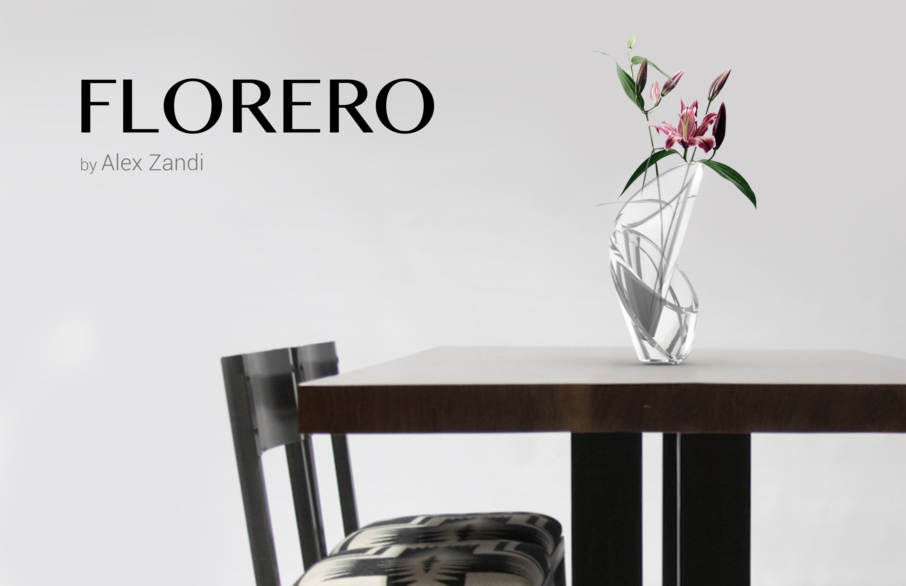
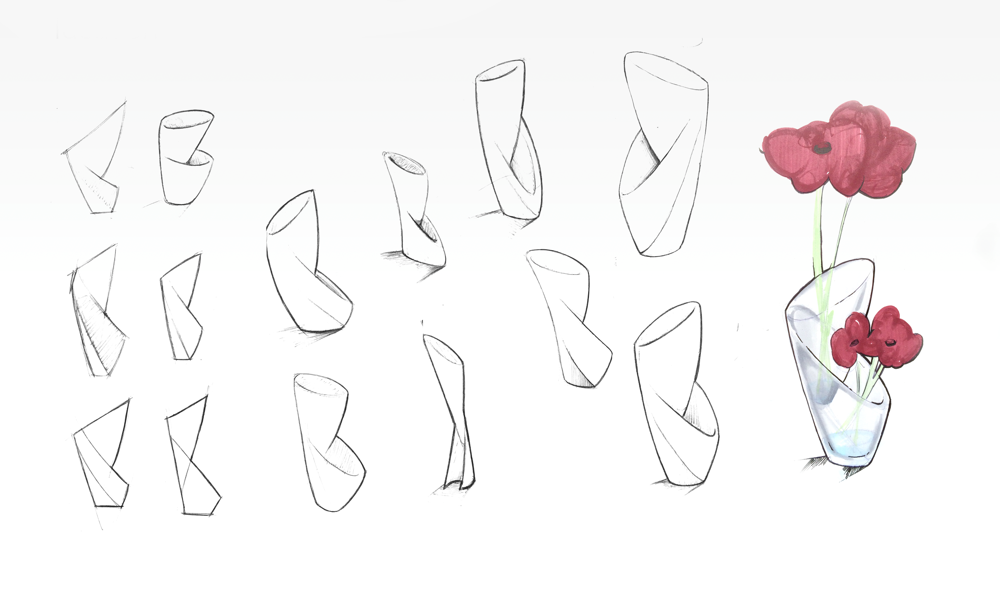
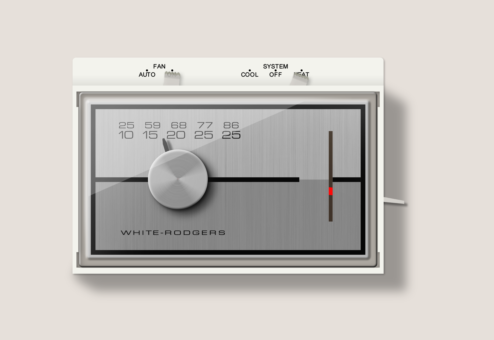
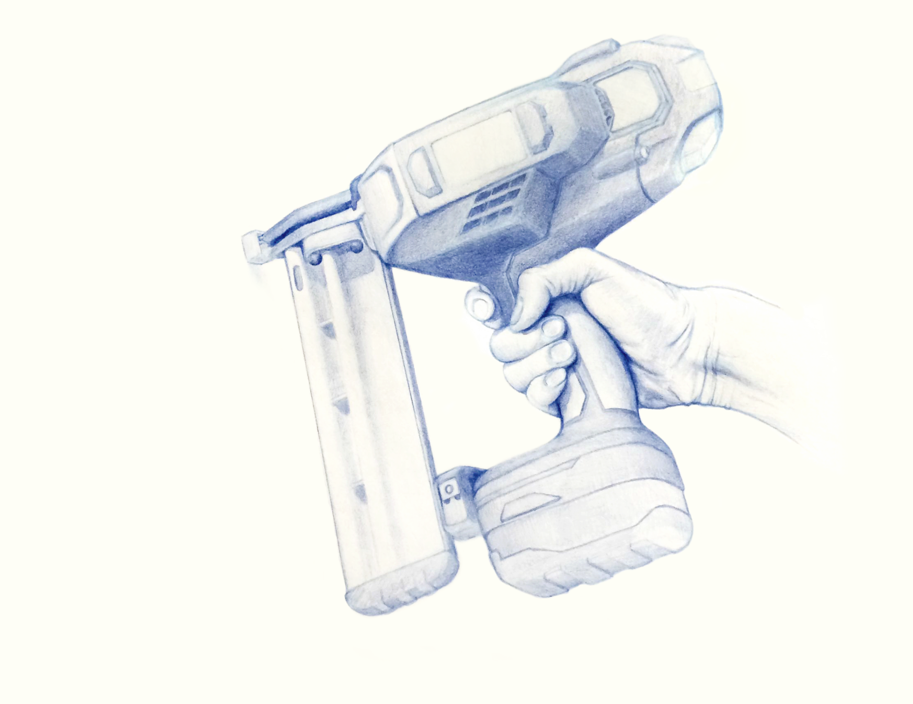
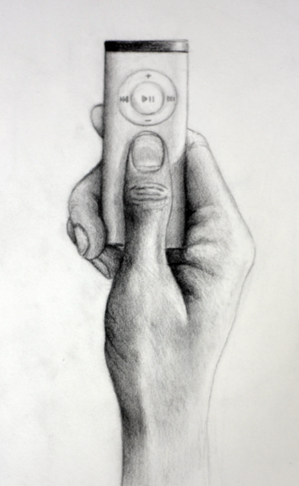
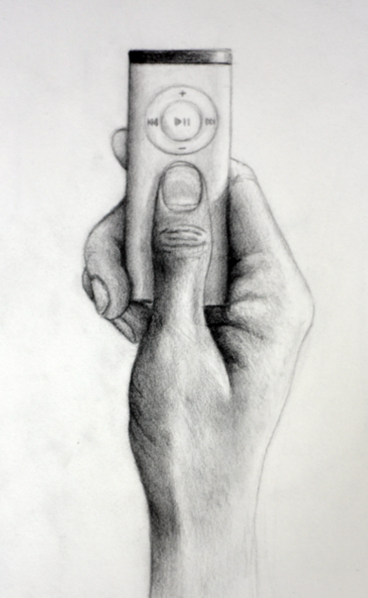

Interdisciplinary Work
Kik was often a sponsor of local hackathons so as an intern I had the chance to design some free notebook swag. These are some of the designs I came up with.
Industrial Design
Vase ∙ 2015
In my first year of studying industrial design, I was tasked with designing a vase. I designed a vase that easily allows for watering with a seperate entrace. Care was also put into the curves and angles.
 Graphic Design
To make some notebooks more personal I had the idea to represent the city of the event on the notebook. However, this idea wouldn't scale very well with the amount of cities that could be added.

The Eco Council was a group at my high school that discussed matters relating to environmental friendliness at school. I made a simple logo that can work with or without the logotype.
We also made hoodies.
Sketches
To make some notebooks more personal I had the idea to represent the city of the event on the notebook. However, this idea wouldn't scale very well with the amount of cities that could be added.
 My drawings alongside those of my colleagues ∙ 2014
My drawings alongside those of my colleagues ∙ 2014
 Pencil drawing of a VW Beetle ∙ 2014

Pencil drawing of my hand with an old Apple Remote ∙ 2013
Pencil drawing of a VW Beetle ∙ 2014

Pencil drawing of my hand with an old Apple Remote ∙ 2013